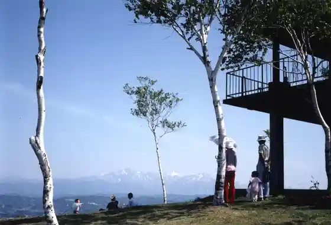

Ojiya Nishikigoi Village
Ojiya, Niigata · 0258-83-2233 · Official / source link
Yamamotoyama Highlands
Ojiya, Niigata · 0258-83-3512 · Official / source link

Nishikigoi
Ojiya, Niigata · 0258-86-0288 · Official / source link
Jigan Tera
Ojiya, Niigata · 0258-82-2495 · Official / source link
Roadside Station (Chijimi no Sato Ojiya) (Kokudo 17 Go)
Ojiya, Niigata · 0258-81-1717 · Official / source link
Yamamotoyama Na no Hanahata / Himawari Hatake
Ojiya, Niigata · 0258-83-3512 · Official / source link
Oja Ru (Shimin no Ie Ojiya Shinanogawa Suiryokuhatsuden Kan)
Ojiya, Niigata · 0258-82-2478 · Official / source link
Ikegahara Hasa Ki
Ojiya, Niigata · 0258-83-3512 · Official / source link
Ojiya Shuku Echigo Jofu
Ojiya, Niigata · 0258-83-2329 · Official / source link
Ojiya Hegisoba
Ojiya, Niigata · 0258-83-3512 · Official / source link
Ojiyahotaru
Ojiya, Niigata · 0258-83-3566 · Official / source link
Ojiya Shuku Yuki Zarashi
Ojiya, Niigata · 0258-83-2329 · Official / source link
Oguri Yamaki Shoku Kannon Do
Ojiya, Niigata · 0258-86-0288 · Official / source link
Ryotei Higashi Tadashi
Ojiya, Niigata · 0258-82-2033 · Official / source link
Ojiya Sogo Gym / Shimin Puru
Ojiya, Niigata · 0258-83-0077 · Official / source link
E Kami to Ojiya no Hiina Festival
Ojiya, Niigata · 0258-83-3512 · Official / source link
Baba Shimizu (Uba Shimizu)
Ojiya, Niigata · 0258-83-3512 · Official / source link
Atago Yama Yukitsubaki Gunsei Chi
Ojiya, Niigata · 0258-83-3512 · Official / source link
Ushi no Kaku Tsuki (Ojiya Yamakoshi)
Ojiya, Niigata · Official / source link
Ojiya Gosho no Kan Nishiwaki Tei
Ojiya, Niigata · 0258-82-3000 · Official / source link
Yamamotoyama Daiichi Chosei Ike Daini Chosei Ike
Ojiya, Niigata · 0258-82-2702 · Official / source link
Taka no I Shuzo (Kabu) / (Etsu no Hatsu Ume)
Ojiya, Niigata · 0258-83-3450 · Official / source link
Hakusan Sports Park
Ojiya, Niigata · 0258-82-0662 · Official / source link
Mokuzo Aizen Myo Zazo
Ojiya, Niigata · 0258-89-2529 · Official / source link
Niigata Meijo (Kabu) / (Choja Jo)
Ojiya, Niigata · 0258-83-2025 · Official / source link
OJIYA SAUNA DEN
Ojiya, Niigata · 0258-84-7444 · Official / source link
Gun Dono no Ike
Ojiya, Niigata · 0258-83-3512 · Official / source link
Shio Dono Chiku Tateno Hara
Ojiya, Niigata · 0258-83-3512 · Official / source link
Ojiya Sogo Sangyokaikan San Plaza
Ojiya, Niigata · 0258-83-4800 · Official / source link
Uonuma Jinja Amida Do
Ojiya, Niigata · 0258-82-2724 · Official / source link
Mimamori Iwa
Ojiya, Niigata · 0258-83-3512 · Official / source link
Asahiyama Kosenjo
Ojiya, Niigata · 0258-83-3512 · Official / source link
Higaeri Nishikigoi Genchi Kengaku
Ojiya, Niigata · 090-6700-7980 · Official / source link
Kin Kurayama
Ojiya, Niigata · 0258-83-3512 · Official / source link
Akashi Do
Ojiya, Niigata · 0258-83-0077 · Official / source link
Ojiya Orimono Workshop (Takumi Yuki Za)
Ojiya, Niigata · 0258-83-2329 · Official / source link
Sotoyuki Sawa no Tanada
Ojiya, Niigata · 0258-83-3512 · Official / source link
Asahiyama
Ojiya, Niigata · 0258-83-3512 · Official / source link
Ojiya Machinaka Meguri
Ojiya, Niigata · 0258-83-3512 · Official / source link
Tontonkararitonkarari ♪ Hata Shoku Experience
Ojiya, Niigata · 0258-83-4800 · Official / source link
Ojiya Kantorii Club
Ojiya, Niigata · 0258-82-5111 · Official / source link
Ojiya Orimono Workshop (Shoku Yuki Za)
Ojiya, Niigata · 0258-83-2329 · Official / source link
Nishiwaki Junzaburo Shihi
Ojiya, Niigata · 0258-82-2724 · Official / source link
Shio Dono Dewarabi Shukaku Taiken Kaisai !
Ojiya, Niigata · Official / source link